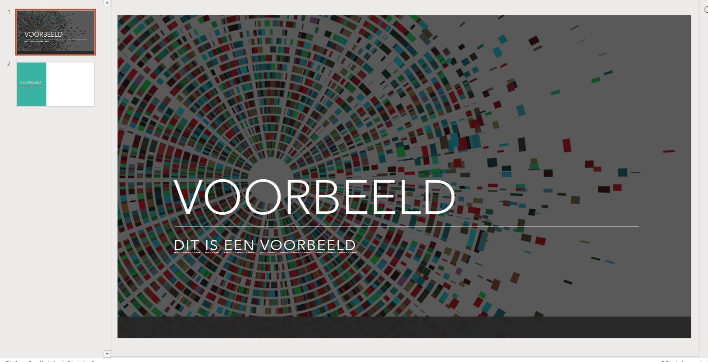

Open PowerPoint online of de app. Om te beginnen klik op 'nieuwe lege presentatie'. Aan de rechter kant zie je 'Ontwerper'. Hier kun je voorgemaakte presets/achtergronden kiezen. Om een nieuwe dia aan te maken klik je op je rechtermuisknop aan de linker kant onder de bestaande dia's en selecteer je 'Nieuwe dia'. Om een overgang toe te voegen klik je aan de bovenkant op de tab 'Overgangen'. De PowerPoint word automatisch opgeslagen. Dit is een voorbeeld powerpoint.

Als je klaar bent met je PowerPoint en je wilt het presenteren klik je op het knopje 'Presenteren' rechts boven in. Dan begint je presentatie, om naar de volgende dia te gaan klik je op de spatie balk of je linker mouse knop.